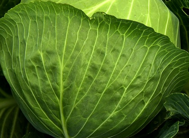

Shchi

Perfect for cold weather and is sure to warm you up
Shchi is a traditional Russian soup that is both hearty and delicious. Made with a base of cabbage and potatoes.
Ingredients
- 1 large onion, chopped
- 1 large carrot, peeled and grated
- 1 large potato, peeled and diced
- 1/2 small head of cabbage, chopped
- 4 cups of chicken or vegetable broth
- 1 can of diced tomatoes
- 1 tablespoon of tomato paste
- 1 bay leaf
- 2 tablespoons of olive oil
- Salt and pepper to taste
- Sour cream and fresh dill for serving (optional)
Steps
- Heat the olive oil in a large pot over medium heat.
- Add the onion and carrot and sauté until softened, about 5 minutes.
- Add the potato and cabbage and sauté for another 5 minutes.
- Pour in the broth, tomatoes, tomato paste, and bay leaf. Stir well.
- Bring the soup to a boil and then reduce the heat to low. Cover the pot and let the soup simmer for about 30 minutes or until the vegetables are tender.
- Remove the bay leaf and season the soup with salt and pepper to taste.
- Serve hot, topped with a dollop of sour cream and a sprinkle of fresh dill.
Shchi is a classic Russian soup that combines the flavors of cabbage and potatoes with savory broth and a touch of tomato. This easy-to-make soup is perfect for a comforting meal on a cold day, and can be enjoyed with a dollop of sour cream and a sprinkle of fresh dill for added flavor.